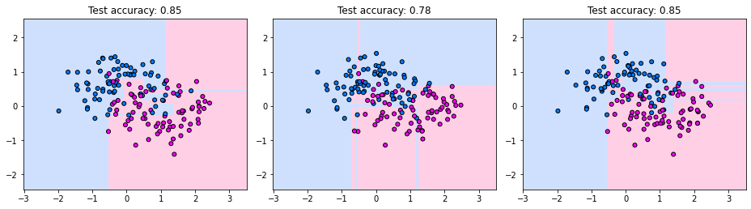
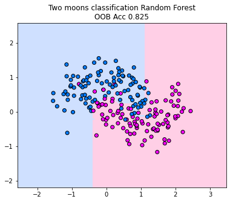

Random Forests
Contents
Random Forests#
Decision trees are determined by a greedy method that recursively chooses the best split for each node. Greedy methods often work surprisingly well for discrete optimization problems, but they get also tend to get lost in details, since they operate only on local views of the data. As a result, decision trees are highly susceptible to changes in the training data.
Have a look the images below. They indicate the decision tree boundaries for three splits of train- and test data on the two moons dataset. Each plot depicts the training data, the learned decision boundary and the test accuracy of the corresponding tree. We observe that the decision boundaries vary quite drastically from tree to tree. For example, the second tree assigns a large region in the top right area to the blue class, while the first and third tree classify the same region as red.
import numpy as np
import matplotlib as mpl
import matplotlib.pyplot as plt
from sklearn import tree
from sklearn.datasets import make_moons
from sklearn.model_selection import train_test_split
from sklearn.inspection import DecisionBoundaryDisplay
from matplotlib.colors import ListedColormap
mpl.rcParams["figure.dpi"] = 200
# Dataset
X, y = make_moons(noise=0.35, random_state=0, n_samples=250)
cm = ListedColormap(["#a0c3ff", "#ffa1cf"])
cm_points = ListedColormap(["#007bff", "magenta"])
# Try several different train/test splits
random_states = [1, 3, 7]
fig, axs = plt.subplots(1, 3, figsize=(13, 8))
axs = axs.ravel()
for ax, rs in zip(axs, random_states):
X_train, X_test, y_train, y_test = train_test_split(
X, y, test_size=0.4, random_state=rs
)
clf = tree.DecisionTreeClassifier(
max_depth=None, # intentionally allow overfitting
random_state=0
)
clf.fit(X_train, y_train)
DecisionBoundaryDisplay.from_estimator(
clf,
X,
response_method="predict",
plot_method="pcolormesh",
shading="auto",
alpha=0.5,
ax=ax,
cmap=cm,
)
ax.scatter(
X_train[:, 0],
X_train[:, 1],
c=y_train,
edgecolors="k",
cmap=cm_points,
s=25,
)
test_acc = np.mean(clf.predict(X_test) == y_test)
ax.set_title(
f"Test accuracy: {test_acc:.2f}"
)
ax.axis("scaled")
plt.tight_layout()
plt.show()

At first glance, the instability of decision trees appears purely problematic. However, if we think about the bias-variance tradeoff, then we can make a low-bias and low-variance model by averaging the predictions of high-variance classifiers. The idea being that averaging predictions over many varying models leads to a well-informed prediction. The disadvantage of this idea is that we lose the interpretability of a single tree. Yet on the other hand, we obtain one of the strongest classifiers to this date, the random forest.
Inference#
The inference of a random forest is a simple majority vote of the decision trees.
Definition 36 (Random Forest)
A Random Forest classifier is an ensemble of \(m\) decision trees \(\hat{y}_{1},\ldots,\hat{y}_{m}\) that aggregates predictions of single trees via a majority vote.
The mode is the value that appears most often in a set.
Training#
The training procedure of a random forest follows the central intuition behind strong ensemble learners: combine many highly flexible models that individually overfit, but make different mistakes. The goal is therefore to train a collection of deep decision trees with low bias and high variance, and to aggregate their predictions into a more stable model.
To achieve this, each tree is trained on a randomly sampled version of the training dataset. However, simply training multiple trees on slightly different datasets is often not sufficient to create a strong ensemble. Since all sampled datasets originate from the same underlying dataset, they still share many similarities. Consequently, the trained trees remain partially correlated and tend to make similar mistakes.
This correlation between trees is problematic because averaging predictions is most effective when models make at least partially independent errors. If all trees behave almost identically, averaging provides little benefit. Random forests therefore deliberately inject additional randomness during training in order to further diversify the trees.
The most important mechanism is random feature subsampling. Instead of considering all features for every split, each node only evaluates a randomly sampled subset of the features. As a result, different trees are encouraged to learn different decision rules and explore different structures in the data. This reduces the correlation between trees and substantially improves the effectiveness of the ensemble averaging.
In detail, the learning algorithm for random forests looks as follows.
Algorithm 10 (Random Forest Training)
Input: training data \(\mathcal{D}\), number of features \(\hat{d}<d\)
\(\mathcal{DT}\gets\emptyset\) # Initialize the set of trees
for \(j\in\{1,\ldots, m\}\)
Draw a bootstrap sample \(\mathcal{D}_j\) from \(\mathcal{D}\)
Train the decision tree \(f_{dtj}\) on \(\mathcal{D}_j\) with the following specifications:
Set as stopping criterion that the minimum number of samples per split is one (train untill maximum depth is reached).
Select for each split randomly \(\hat{d}\) features that are considered for finding the best split
\(\mathcal{DT}\gets \mathcal{DT}\cup\{f_{dtj}\}\)
Random forests use a specific sampling procedure, called bootstrapping, to imitate various training datasets from one given training dataset.
Bootstrapping#
Bootstrapping is a dataset sampling procedure similar to the repeated train-test splits used in cross-validation. However, unlike cross-validation, bootstrap samples are generated by sampling datapoints with replacement. As a result, the same datapoint may occur multiple times in a bootstrap sample, while other datapoints may not appear at all.
Definition 37 (Bootstrapping)
Given a dataset \(\mathcal{D}=\{(\vvec{x}_i,y_i)\mid 1\leq i\leq n\}\) containing \(n\) datapoints. A bootstrap sample
Note
It’s common to define datasets as mathematical sets, as we have done in this book. However, a mathematical set has no duplicates in general. Datasets on the other hand may contain duplicate data points and in bootstrapping samples this is most often the case. Hence, in order to not get confused, you can also imagine a dataset as a set of thrupels \((i,\vvec{x}_i,y_i)\) where \(i\) is an index that is uniquely assigned to each datapoint. We just omit the index from our dataset notation to shorten it.
Let’s write a simple example demonstrating what bootstrap samples look like:
import numpy as np
# Original dataset
data = np.array([1, 2, 3, 4, 5])
n = len(data)
# Number of bootstrap samples
m = 5 # feel free to increase this
print("Original data D", data)
print("\nBootstrap samples:")
for j in range(m):
# Sample with replacement
bootstrap_sample = np.random.choice(data, size=n, replace=True)
print(f"D{j+1}: {bootstrap_sample}")
Original data D [1 2 3 4 5]
Bootstrap samples:
D1: [5 4 1 4 3]
D2: [4 3 3 4 3]
D3: [5 1 3 4 4]
D4: [1 5 2 5 2]
D5: [1 2 2 3 3]
We see how some data points are duplicates in the bootstrap samples and other are not occurring at all. A data point is not chosen for a bootstrap sample with probability \((1-\frac1n)^n\) (\(n\) times, the data point hasn’t been selected, which has a probability of \(1-\frac1n\)). If \(n\rightarrow \infty\) we have \((1-\frac1n)^n\rightarrow \exp(-1)\approx 1/3\). Hence, very roughly one third of all datapoints is missing from one bootstrap sample (in a big dataset).
Evaluation#
Random forests naturally generate their own train-test splits during training, that can be used for the evaluation. Since each decision tree is trained on a bootstrap sample of the dataset, some datapoints are automatically excluded from the training process of that tree. These excluded datapoints can be used as test samples to efficiently estimate the prediction error of the random forest without requiring an additional validation set or explicit cross-validation.
Particularly, we van use this evaluation mechanism to tune the hyperparameters that influence the tradeoff between the strength and diversity of the trees. This adresses for example the parameter \(\hat{d}\), determining how many features are considered at each split. Decreasing \(\hat{d}\) reduces correlation (which is good) but can also reduce the predictive power of the trees (which is bad).
To efficiently evaluate such parameter choices, random forests use the Out Of Bag (OOB) error estimate, which works similarly to cross-validation.
Each bootstrap dataset \(\mathcal{D}_j\) naturally induces a corresponding test set
Overall, the OOB estimate provides an efficient approximation of the expected prediction error while fully reusing the train-test splits that are already generated during random forest training.
Decision boundary#
We plot the decision boundary of a random forest for the two moons classification dataset. Below, we train 10 decision trees, considering only one randomly sampled feature for each split (since the dimensionality of the data is two, we can’t go higher if we want to restrict the number of features considered for each split). We observe how the majority vote between the trees fracture the decision boundary in the area between the moons. The decision boundary indicates to us that the random forest is able to capture much more complex decision boundaries than a single tree. However, in this case, we do observe some overfitting areas where the decision boundary is adapting a lot to the points that reach into the other class. However, if you increase the number of trees in the forest, this behavior diminishes and the decision boundary becomes more smooth (in tendency).
from sklearn.model_selection import train_test_split
from sklearn.ensemble import RandomForestClassifier
import matplotlib.pyplot as plt
from sklearn.inspection import DecisionBoundaryDisplay
from matplotlib.colors import ListedColormap, LinearSegmentedColormap
from sklearn.datasets import make_moons
X,y = make_moons(noise=0.3, random_state=0, n_samples=200)
_, ax = plt.subplots(ncols=1, figsize=(12, 5))
cm = ListedColormap(["#a0c3ff", "#ffa1cf"])
cm_points = ListedColormap(["#007bff", "magenta"])
rf = RandomForestClassifier(max_depth=None, n_estimators=10, max_features=1,oob_score=True, random_state=42)
y_pred = rf.fit(X, y)
disp = DecisionBoundaryDisplay.from_estimator(
rf,
X,
response_method="predict",
plot_method="pcolormesh",
shading="auto",
alpha=0.5,
ax=ax,
cmap=cm,
)
scatter = disp.ax_.scatter(X[:, 0], X[:, 1], c=y, edgecolors="k",cmap = cm_points)
_ = disp.ax_.set_title(
f"Two moons classification Random Forest\nOOB Acc {rf.oob_score_}"
)
ax.axis('scaled')
plt.show()
